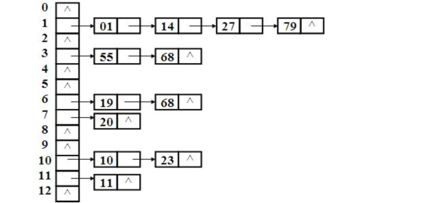
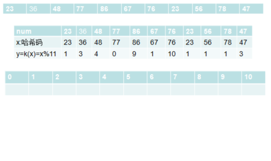
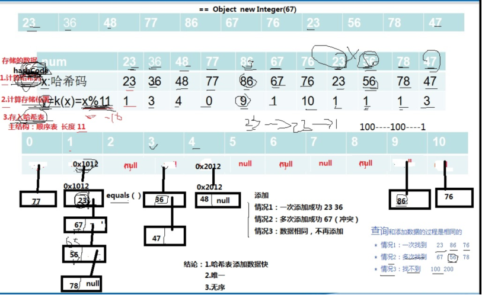

引入哈希表
前面查找方法共同特点：通过将关键字值与给定值比较，来确定位置。效率取决比较次数。
理想的方法是：不需要比较，根据给定值能直接定位记录的存储位置。
这样，需要在记录的存储位置与该记录的关键字之间建立一种确定的对应关系，使每个记录的关键字与一个存储位置相对应。
1.哈希表的结构和特点
hashtable 也叫散列表
特点：快 很快 神奇的快
结构：结构有多种
最流行、最容易理解：顺序表+链表
主结构：顺序表
每个顺序表的节点在单独引出一个链表

哈希表初始操作状态

2.哈希表是如何添加数据的
1.计算哈希码(调用hashCode(),结果是一个int值，整数的哈希码取自身即可)
2.计算在哈希表中的存储位置 y=k(x)=x%11 x:哈希码 k(x) 函数 y：在哈希表中的存储位置
3.存入哈希表
情况1：一次添加成功
情况2：多次添加成功（出现了冲突，调用equals()和对应链表的元素进行比较，
比较到最后，结果都是false，创建新节点，存储数据，并加入链表末尾）
情况3：不添加（出现了冲突，调用equals()和对应链表的元素进行比较，
经过一次或者多次比较后，结果是true，表明重复，不添加）
结论1：哈希表添加数据快（3步即可，不考虑冲突）
结论2：唯一
结论2：无序

3.哈希表是如何查询数据的
和添加数据的过程是相同的
情况1：一次找到 23 86 76
情况2：多次找到 67 56 78
情况3：找不到 100 200
结论1：哈希表查询数据快
结论2：哈希表删除数据快
结论3：哈希表更新数据快(如果更新后影响到哈希码值，就比较繁琐了，比如要删除再添加了)
4.hashCode和equals到底有什么神奇的作用
hashCode():计算哈希码，是一个整数，根据哈希码可以计算出数据在哈希表中的存储位置
equals()：添加时出现了冲突，需要通过equals进行比较，判断是否相同
查询时也需要使用equals进行比较，判断是否相同
5.各种类型数据的哈希码应该如何获取 hashCode()
1.int 取自身 看Integer的源码
2.double 3.14 3.15 3.145 6.567 9.87 取整不可以 看Double的源码
3.String java oracle j+a+v+a 将各个字符的编码值相加不可以
abc cba bac a:97 b:98 c:99
abc 1*97+2*98+3*99
cba 1*99+2*98+3*97
4.Student 先各个属性的哈希码，进行某些相加相乘的运算
int id
String name
int age
double score;
6.如何减少冲突
1）哈希表的长度和表中的记录数的比例--装填因子：
如果Hash表的空间远远大于最后实际存储的记录个数，则造成了很大的空间浪费，
如果选取小了的话，则容易造成冲突。
在实际情况中，一般需要根据最终记录存储个数和关键字的分布特点来确定Hash表的大小。
还有一种情况时可能事先不知道最终需要存储的记录个数，则需要动态维护Hash表的容量，此时可能需要重新计算Hash地址。
装填因子=表中的记录数/哈希表的长度，
如果装填因子越小，表明表中还有很多的空单元，则添加发生冲突的可能性越小；
而装填因子越大，则发生冲突的可能性就越大，在查找时所耗费的时间就越多。
有相关文献证明当装填因子在0.5左右的时候，Hash的性能能够达到最优。
因此，一般情况下，装填因子取经验值0.5。
2）哈希函数的选择
直接定址法 平方取中法 折叠法 除留取余法（y = x%11）
查询相关资料
3）处理冲突的方法
链地址法 开放地址法 再散列法 建立一个公共溢出区